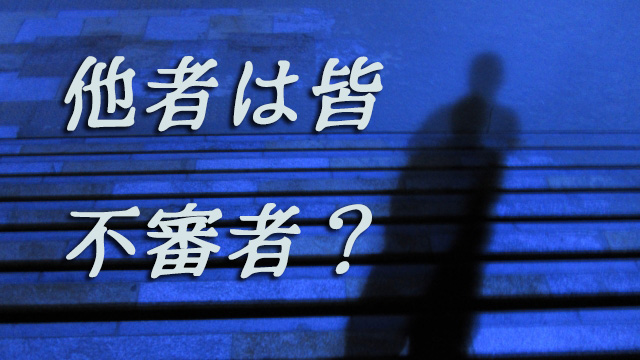

どうでも良い話だが最近やたらと不審者と言う言葉を見聞きする。街を歩いていても「不審者を見たら110番！」などという看板を見かけたりする。
駅のホームでも「不審な物や人を見かけたら近くの駅員にお知らせ下さい」というアナウンスが流れたり、子をもつ親のスマホにも学校や行政から「不審者出没！」の情報が毎日のように配信される。
確かにこのご時世、テロやら通り魔、未成年者の連れ去りなどいつ危険な目に遭遇するか分からない状況だから警戒するに越したことはないというのはうなずける。
しかし、だからといって「不審者」への恐怖をやたら募らせるのはいかがなものだろうか。見えない不審者への恐怖はそれこそ互いへの不信感をあおり立てることになりはしないか。
究極、相互監視がはびこり互いの行動を制限する窮屈な社会になりかねないのではないか。
そんな余計な心配がわき起こる。
先日も小学生の子をもつお母さんたちと話していて「最近の子どもはあまり外で遊ばなくなりましたね」と振ると、「だって外に出ると不審者とか多いし」と返事がかえってきた。
出た！不審者というコトバ…(笑)
いや、実は笑いごとではない。というのもあなたもいつ不審者に見誤られるか分からないからだ。
私も何年か前、夜遅く帰宅途中少し疲れたので道の端で車を停めて休んでいるとバットを手にした老人に襲われかけた（⁉）ことがある。そこは住宅街だったので「てっきり（私を）不審者だと思った」とその老人は言う。（しかしバットを構えて現れたのには驚いた‼）
まっ、この場合夜にエンジンかけっぱなしで車を停めていた私が悪いのだが…。
あと、あるブロガーさんが書いていたことだが、1歳半になる我が娘を公園で遊ばせていたらパトカーが来てお巡りさんに尋問されたという。娘だと主張してもすぐには信じてもらえず「親子だと証明できるか」と言われたそうだ。「証明しろと言われても…」と困惑しながらもスマホに家族写真があるのを思い出し、やっと事なきを得たとのこと。
彼いわく「せちがらい世の中になった！」
つまり「不審者」として誰かが通報したのだろう。
そういえば私の中学時代の担任も、かつて在職していた学校（すぐ近所）を懐かしく思って訪問したところたまたま休みで、仕方なく校舎の周りをウロウロしていたら不審者と見られて通報された（パトカーが来た）と話していた。
つまり私たちはいつでも「不審者」に見られる可能性がある。なぜなら不審者とは基本的に見知らぬ人であり、見知らぬ人はいつでも怪しい人になり得るからだ。
誰かが怪しいと思えばその人は途端に怪しい人物―不審者―となる。
１．
私は不審者など存在しないと言ってるわけではない。冒頭に話したようにテロや通り魔、連れ去りなど事件を起こす人間は必ずいる。だから警戒する注意力は必要だし、むしろ我々日本人は一歩外へ出たら何が起こるか分からないという意味での警戒レベルは低いと感じるくらいだ。
スマホを見ながらボーっと歩いている人の何と多いことか。女性が無防備に夜ひとり歩きしたり、電車の中で無警戒に眠りこけていたりと外国では考えられない日本人のノンキぶりに、私はいつも一抹の不安を感じているほどだ。
だが、それほど普段は無警戒な日本人がなぜ「不審者」という見えない犯罪予備軍にこれほど脅えているのか。そこに疑問をもつ。
車を停めていたら通報する。若い父親が娘と遊んでいたら通報する。老いた元教師がかつての学び舎を訪れたら通報する。母親たちは不審者から子どもを守るために外へ出さない。
これは一体何なのか。人を見たらドロボウと思えという昔の格言を現代の日本人は急に思い出したのか。
本当のところは良く分からない。ただ、現代特有の「ゆがみ」のようなものは感じる。
1つは情報化社会ゆえの現象。ネットやテレビなどで犯罪や不審人物の動向が以前よりスピーディに伝達される。これによって自分は経験していなくても「世間には事件事故が多く、悪い奴もいっぱいいるようだ」という認識が芽ばえる。
2つめはよく言われるように近所づき合いのような人間関係が昔より希薄になっていること。かつての日本社会のように町内が皆顔見知りで互いの家族構成や、人となりや職業までも熟知している間柄など存在せず、マンション暮らしに代表されるように今や隣に誰が住んでいるのかさえ分からない。これが都会だけでなく地方都市も含めると全国的な現象である以上社会全体の匿名性が高まっていると言えるだろう。
社会全体として匿名性が高いということはそれだけ「見知らぬ人が多い」ということになる。さらに日本特有のムラ社会的心性もあるかも知れない。元々日本人は身内(顔見知り)には親切だがヨソ者には警戒心が強いという特徴がある。ヨソ者への警戒は日本だけではないがそれでも村八分や無視などの日本的なヨソ者排除の心情（ムラ社会的特性）は今でも残っていると思われる。
世間には悪い奴が多い。見知らぬ他人が多い。ヨソ者への排他的心性。これら3つが合わさると「不審者」誕生となる。
要するに今の時代、不審者を見い出しやすいということ。他者は皆不審者予備軍というわけだ。
２．
こうして見てくると何が問題か少しずつ浮かび上がる。不審者が多いという事実があるのではなく、私たちが不審者を認知する機会が多いというのが実態なのだ。
実態より認知数が多いといえば次のことを思い出す。警察庁などが公表する犯罪認知件数の統計だ。これによると全体の「認知件数」は総数としては増えていても、中身をよく見れば殺人などの凶悪件数はぐんと減っていたりする。つまり割合としては凶悪事件は減っているのに軽犯罪（いちばん多いのは自転車ドロボウ）は年々増えているのだ。
これによって警察やメディアは「最近犯罪は増えている」と盛んに喧伝するが、そして人々も「恐い！」となるがその実ほんとうの恐い事件（殺人、放火、強盗など）はむしろ年々減少しているのが実態だということを見逃してしまう。
昔話だが私が子どもだった昭和30年代、近所で暴力団がらみの殺傷事件があったが地方紙に載っただけで全国紙もテレビも報道しなかったのを憶えている。当時は殺人事件は珍しくなく全国的ニュースにさえならなかった。もちろん今ほどテレビなどのメディアが発達していなかった事情もあるが、事実は多すぎていちいち報道できなかったのだ。
統計を見れば分かるが今は当時より凶悪犯罪は数分の一（年によっては10分の1）にまで減っている。だが人々にその実感はない。
その理由は先に述べたように情報社会で報道機会が増えささいなことも、あっという間に「危険情報」として共有されるようになったからだ。
つまり私たちは実態以上に不審者の影に脅かされている。親もとに届く不審者情報の中には、もちろんホンモノ（⁉）の不審者もいるだろうが通りすがりの、私のようなオジサンも混じっているに違いない。
共同体の消滅した匿名社会において私たちは様々な真偽不明の情報に踊らされやすくなっている。そのことを自覚しなくては本当の危険から身を守ることさえ覚束なくなると私は思う。
３．
こうして見かけ以上に不審者の存在が増えるにつれ、最初に言ったように相互不信の社会ができ上がってしまう。見知らぬ者への疑心暗鬼は人々の心にさらなる「不審者ではないか」という妄想を引き起こす。
心理学的に言うなら心の中の恐怖は外側に投影され他者を現実上の「危険人物」と認知してしまうということ。心に秘めた感情、たとえば見知らぬ他人への排除の気持ちや憎しみ、恐怖というマイナス感情はシャドウ（影）となって意識下に抑圧されているが、それが現実の他者へ投影されると非常にやっかいなことになる。
それらの投影は個人間に限らず集団的に波及する場合があるからだ。
いじめ、村八分、そして差別の問題。国家間になると特定の民族や移民への差別や反感、敵対心。そしてそれらは恐怖に基いている故に「やられる前にやっつける」という攻撃性へとエスカレートしていく。「身を守るために攻撃する」というのが常に戦争を始める際の常套句であることは歴史が示す通りだ。ここは気をつけておくべき点だと思う。
不審者の話が何やら大きく膨らんでしまったのでもとに戻す。
現代は昔以上に「見知らぬ他者への恐怖」が互いの心に潜在していること。そのことを私たちは深く自覚し、実態以上の危険性を現実上に創り出さないよう注意すべきだと言いたい。確かに事件や事故は起こっているし不幸な犯罪も起こっている。しかしそれはいつの時代でもそうだった。そう認識した上で自分や家族を危険からどう守るかは各々がしっかりとルール化しておく。
子どもを単独で外で遊ばせない。日頃から子を見守る親のネットワークをつくっておく。帰宅時間の厳守。どこに居るか常にメールなどで連絡し合う。スマホを見ながらの歩行はやらない。電車の中で寝ない。知らない人について行かない。
このように家庭ごとに最低限の安全ルールを決めておくことで「他者への被害妄想」は押さえることができる。
私たち人間は互いに映し合う鏡の関係にある。あなたが他者に疑いをもつとき、相手もあなたに疑いの眼を向ける。逆に信頼の眼差しで見ればその光は同じくあなたにはね返ってくる。互いの心の中を投影し合うことで社会は良くなりもするし悪くなりもする。
どうせなら良い投影を互いに交わしたいと思う。
いやぁ、それにしても個人的にはもう不審者に見られるのはコリゴリですね。何とも言えない不快感でした…。
お互いもっと信頼し合える社会でありたいですね。